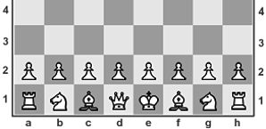

Inteligencia Artificial
PROCESO EVOLUTIVO DE LA INTELIGENCIA ARTIFICIAL
DETRAS DEL AJEDREZ POR COMPUTADORA
¿Qué es la inteligencia artificial?
El término inteligencia artificial(IA) fue adoptado en 1956,
pero se ha vuelto más popular hoy día gracias al incremento en los
volúmenes de datos, algoritmos avanzados, y mejoras en el poder de cómputo.
La inteligencia artificial es la base a partir de la cual se imitan los procesos
de inteligencia humana mediante la creación y la aplicación de algoritmos
creados en un entorno dinámico de computación. O bien, dicho de forma sencilla,
se refiere a sistemas o
máquinas que imitan la inteligencia humana para realizar tareas y pueden
mejorar iterativamente a partir de la información que recopilan.
A continuación se hablará sobre fundamentos teóricos de algunas técnicas
clásicas y actuales de la IA aplicadas a la juegos automáticos de Ajedrez.
La teoría de los juegos ha sido uno de los campos que más ha contribuido al desarrollo de IA,
sobre todo, la teoría del juego de ajedrez. Un momento culminante en este desarrollo, tuvo
lugar en los años 1996-1997. Fue entonces cuando el Alter-ego de la computadora Deep Blue y
el campeón del mundo Garri Kasparov, se enfrentaron en una serie de partidas de ajedrez.
Deep Blue es una súper-computadora fabricada por IBM, basada en 30 procesadores ampliados
con 480 procesadores cada uno. Mientras la máquina está en funcionamiento, es capaz de
montar 200 millones de entreactos por segundo. Es decir que para la decisión de una jugada,
opera simultáneamente un gran número de presencialidades diferidas conectadas «en paralelo».
El ajedrez es un juego de estrategia en el que dos personas se desafían frente a un tablero cuadriculado de 64 casillas y dos grupos de figuras, 16 para cada jugador, unas blancas y otras negras: un rey, una dama, dos alfiles, dos caballos, dos torres y ocho peones. El ajedrez te ayuda a desarrollar gran concentración, mejora el nivel de atención de quien lo practica, también potencia la habilidad para resolver problemas, gracias a los movimientos y estrategias. Además, como los jugadores deben tomar decisiones de manera rápida bajo presión, se desarrolla un pensamiento creativo y original.
Para jugar bien al ajedrez un sistema de IA ha de hacer tres cosas:
En primer lugar ha de aplicar algún tipo de técnica que le permita encontrar el movimiento óptimo (esto se hace a través de un algoritmo conocido como minimax), teniendo en cuenta que existe enfrente un adversario con «información perfecta» (es decir, que conoce de antemano nuestra estrategia y sus consecuencias).
En segundo lugar, el sistema de IA ha de aprender a reducir el espacio de búsqueda para poder elegir un buen movimiento cuando el tiempo de búsqueda es limitado (aunque quizás no el óptimo), para lo cual se utilizan técnicas que permiten ignorar las porciones del árbol de búsqueda que no hacen ninguna diferencia de cara al resultado final y por tanto son «prescindibles» (el algoritmo más usado para esto se llama podado [del árbol] alfa-beta).
Finalmente, hay que hacer uso de funciones de evaluación heurísticas (basadas en la experiencia de los jugadores de ajedrez) que nos permitan aproximar lo “buena” que es una posición concreta del juego en una partida sin tener que hacer una búsqueda completa de todos los movimientos posibles “hacia adelante” de la partida.
Por otro lado, en cuanto al desarrollo del juego, las partidas de ajedrez tienen 3 fases: la apertura, el juego medio y los finales. Al principio de las partidas, en las aperturas, el árbol de búsqueda es enorme, por lo que, en vez de calcular el mejor movimiento, lo que nos haría perder por exceder del tiempo asignado (y si se juega sin límite de tiempo por aburrimiento de nuestro oponente), es mucho más rápido usar una estructura de datos denominada tabla de consulta que se almacena en la memoria del sistema de IA, donde ésta puede consultar los movimientos a jugar en estas primeras jugadas, lo que es equivalente a disponer de un “libro de aperturas”.
Este mismo razonamiento se utiliza para los finales de partida. Ya han sido resueltos todos los finales de partida de cinco piezas (por oponente) y muchos con seis piezas, por lo que en esta fase los sistemas de IA son implacables, mejorando las prestaciones de los mejores jugadores humanos.
Es en el juego medio con todos sus matices tácticos y estratégicos donde las fuerzas con los seres humanos están más igualadas en la actualidad. Aquí la clave está en usar una función de evaluación potente con decenas o centenares de características.
En 1997, anunciando el fin de la supremacía de los seres humanos en el ajedrez, el sistema Deep Blue de IBM (un superordenador con 30 microprocesadores IBM RS/6000 trabajando en paralelo) venció al campeón del mundo Garri Kasparov (3,5-2,5). Según los expertos, la victoria se basó en la capacidad bruta de procesamiento, capaz de buscar 30.000 millones de posiciones por movimiento y “anticipar” 14 niveles de forma habitual frente a los 5 o 6 niveles de anticipación de los grandes maestros. La clave estaba que en las posiciones más prometedoras en términos de movimientos de “obligar” al oponente o también, “forzados” por el oponente, podía “anticipar” hasta 40 niveles. La función de evaluación tenía más de 8.000 características del juego, algunas muy específicas de determinados patrones de juego, un libro de aperturas de más de 4.000 posiciones y una base de datos de 700.000 partidas de grandes maestros de las cuales se extrajeron recomendaciones consensuadas de juego.
Inteligencias artificiales en el ajedrez más importantes hoy en día.
AlphaZero
Stockfish
Lc0
Komodo
Cada vez que aparece en escena (siempre rodeado de un gran misterio) se monta un gran revuelo. Que una inteligencia artificial de ajedrez consiga un nivel galáctico a base de jugar partidas consigo misma, suena a argumento de una película de ciencia ficción. El primer match que jugó frente a Stockfish supuso una enorme conmoción para la comunidad ajedrecística, que vio cómo las redes neuronales de esta nueva inteligencia artificial arrollaban al módulo de ajedrez más potente.
Está considerado como el módulo de ajedrez más poderoso de todos los tiempos. No es una inteligencia artificial como AlphaZero, pero el nivel que ha conseguido es realmente sorprendente. Es un proyecto de código abierto que se va actualizando constantemente. Desde su aparición ha jugado muchísimas partidas brillantes, entre otros en el Computer Chess Championship.
Pocos proyectos han conseguido tantos seguidores como este. Se trata de un proyecto de código abierto al que se van sumando las contribuciones de muchos programadores expertos. Este proyecto ha sido dirigido por Gary Linscott, el mismo desarrollador de Stockfish. Ganó la 15ª temporada del TCEC, el prestigioso torneo de computadoras, batiendo a Stockfish en la final. Y durante los diferentes eventos que organiza chess.com, encuadrados en el marco del Computer Chess Championship, está realizando magníficas actuaciones.
Otros de los proyectos más atractivos que se llevan a cabo. El dragón más temido de los motores de análisis (campeón del mundo de computadoras del 2019 y campeón del mundo de software de ajedrez ese mismo año) que hace no demasiado tiempo se sumó a la familia de chess.com, Komodo. No solamente es uno de los motores de ajedrez más potentes de la actualidad, sino que de la mano de uno de sus desarrolladores, el GM Larry Kaufman, se experimenta con diferentes versiones, integrando también modelos propios de las inteligencias artificiales.